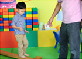
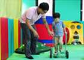

兒童發展全方位檢測
兒童發展全方位檢測
感覺統合綜合評量、神經反射、粗細動作、日常行為發展評量評估孩子後天的行為，孩子的行為模式，大大地影響其天賦的發展，0-12歲是孩子未來的決定性關鍵時期，藉由醫療專業的「全方位發展評量」，協助家長掌握孩子現階段的發展狀況，讓孩子充分發揮自己的天賦，順利開創自己的一片天。

專業親子諮詢
專業親子諮詢
父母親是孩子的最好的依靠，是孩子成長過程中最重要的角色，對孩子的發展影響相當不容小覷。 本中心希望透過專業的親子諮詢，讓父母親在遇到任何教養方面的疑惑時，在親子相處上遇到任何難處時，或是對於孩子的學習狀況、行為及情緒表現感到束手無措時，您們可以找到相關的專業老師加以諮商、協助解決問題。
兒童心理諮商
兒童心理諮商
針對小四以上的青少年，有異常行為特質，包含叛逆行為及異常的思維模式和偏激的親子關係，協助健全兒童心靈的發展。